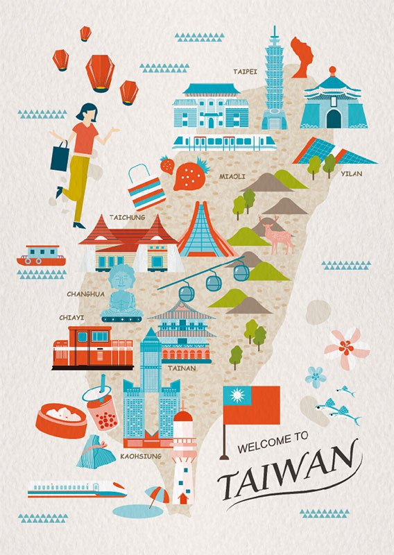
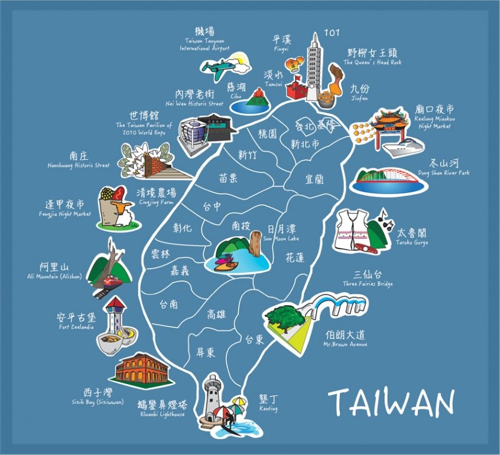
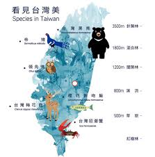
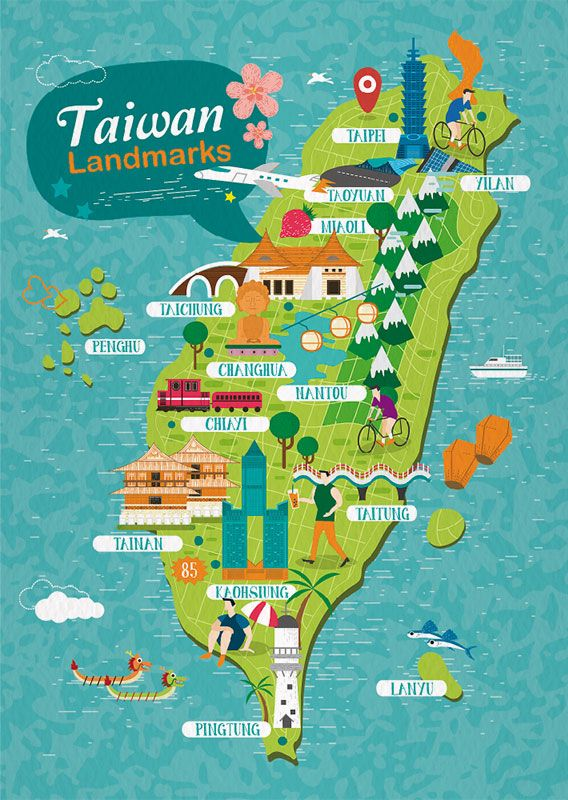
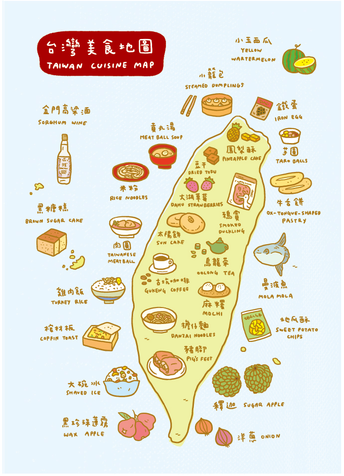

Taiwan, a country in East Asian with 23.57 million inhabitants, is one of the most beautiful and fun places in the world.
Taiwanese people are friendly, inclusive, full of enthusiasm, and embrace equality and freedom.
The diverse culture makes Taiwan an interesting place that full of Fun Facts and things you have to know.
In an area of 35,808 square kilometres (13,826 sq mi), Taiwan is famous for its amazing Natural Scenes including mountains and rivers
Last but not least, the most well-known features of Taiwan might be the delicious Food.
Nowaday, Taiwanese food are popular among the world, including Bubble Tea, Taiwanese friend chichen and the famous Din Tai Fung dumpling.




